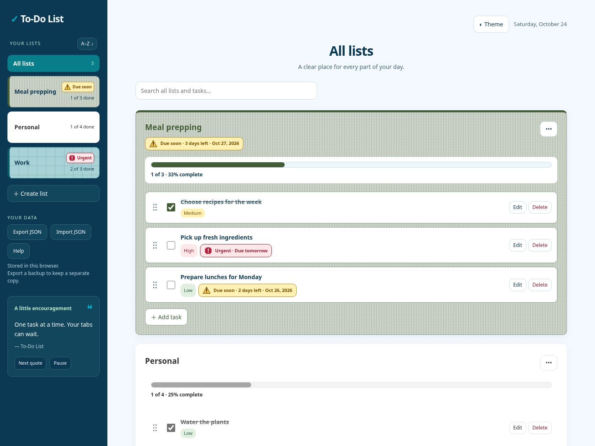
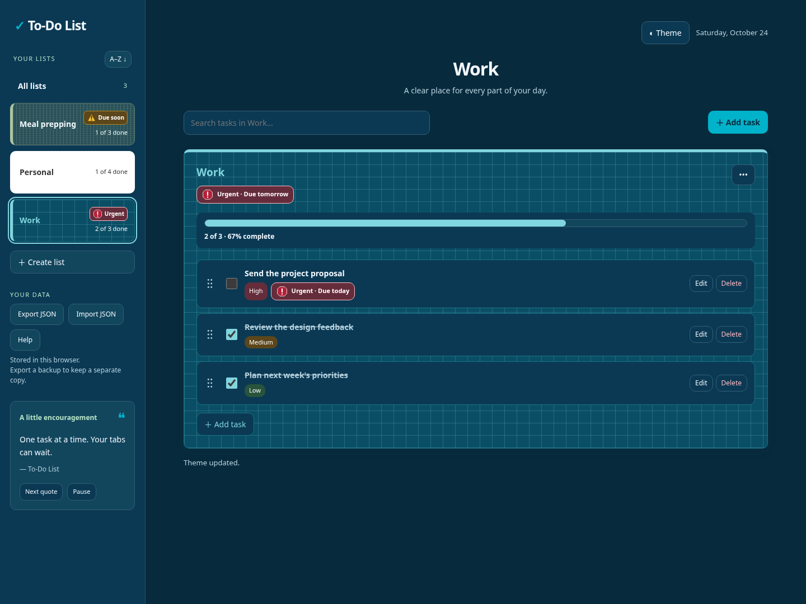

I’m naturally curious, a problem solver at heart, and someone who believes there’s always something new to learn and a better way to do things.
01 About
Curious by nature, a problem solver at heart, and always looking for a better way to do things.
I'm a Lead Quality Assurance Engineer who genuinely enjoys figuring out how things work, why they don't, and what can be done to make them better. I approach software from both the technical and customer perspectives, bringing curiosity, critical thinking, and collaboration into everything I do.
My journey into technology began with a software development bootcamp, but my learning has never stopped there. I'm someone who learns by doing, isn't afraid to tackle unfamiliar challenges, and enjoys turning new ideas into practical solutions. I'm particularly drawn to the space where quality engineering, software development, and creative problem-solving come together.
Today, I'm continuing to expand my engineering skills by building my own fitness application, gaining hands-on experience across the development lifecycle, and exploring how AI-assisted development and automation can improve the way I work and the quality of what I deliver.
02 BEYOND THE TEST CASE
Quality Is More Than Finding Bugs
I believe effective quality engineering starts long before a feature reaches testing. It's about understanding the product, questioning assumptions, anticipating risks, and recognizing how even small changes can affect the bigger picture.
As a Lead Quality Assurance Engineer, I take ownership of quality throughout the development lifecycle. I work closely with Product and Engineering to bridge the gap between requirements, implementation, and the real-world experience of the people using our software.
As development continues to evolve with AI, so does my approach to testing. I'm actively developing more structured, automation-ready testing practices and exploring ways to use AI and engineering tools to improve coverage, efficiency, and release confidence.
What matters most to me is helping teams build better software, solve problems thoughtfully, and deliver work we can stand behind.
03 Projects
Currently building / Full lifecycle
Fitness Application
A gym app—and a hands-on way to practice the engineering process from beginning to end.
I’m developing a gym app to learn PHP and MariaDB using XAMPP for local development. Alongside the code, I’m using a personal Jira project to practice how work moves through the software development lifecycle.
The focus goes beyond building features. I'm working through requirements, acceptance criteria, implementation, testing, defect tracking, and delivery while treating documentation as a living part of the project. As the application evolves, so should the documentation, making it easier for future developers to understand the system, contribute effectively, and build upon the work already completed.
The process behind the projectA feature walkthrough is in progress, connecting Jira requirements, implementation, test evidence, and lessons learned. The app’s final name is still being decided.
PHP
MariaDB
XAMPP
Jira
SDLC
QA TOOLING / AI-ASSISTED DEVELOPMENT
Time Tracker
A lightweight Windows application built to solve a real problem in my daily QA workflow.
Working across multiple testing tasks, defect investigations, and AI conversations made accurately tracking my time increasingly difficult. Rather than continuing to work around the problem, I decided to build a tool that fit the way I actually work. A time tracker created with AI assistance as part of my exploration of practical tools for quality assurance. This project connects my QA experience with hands-on learning in AI-assisted development.
Time Tracker allows me to manage individual work cards with independent timers, descriptions, and visual organization, making it easier to track time throughout the day and transfer accurate totals into our timekeeping system.
I developed the application using C# and WPF with AI-assisted development, incorporating local data storage, automated testing, and GitHub Actions to help maintain reliability as the application evolves.
The result is a practical, offline desktop tool that solves an everyday problem while giving me hands-on experience with application development, test automation, and maintaining a project beyond its initial release.
Dark mode ↗Light mode ↗
Actual Windows app screenshots using sample data. Select an image to view it full size.
Free and open source. No account or separate .NET installation required.
QA Workflow
AI-Assisted Development
C# / WPF
Earlier projects


To-Do ListA local-first workspace for themed lists, priorities, deadlines, and everyday progress.HTML · CSS · JavaScriptView project detailsHide project details+
A browser-based task manager for organizing work, personal plans, and everything in between. The updated app brings customizable lists and practical task-management features together without an account or backend.
Lists have their own colors, background patterns, and deadlines. Tasks support priorities, due dates, editing, completion, and mouse, touch, or keyboard reordering. Search, progress bars, deadline warnings, and undo for the most recently deleted task help keep the work visible.
Data saves in the browser’s local storage, with validated JSON import and export for backups. Light and dark themes and a responsive layout support everyday use across screen sizes. Lists do not automatically sync between devices.
Light-mode workspace ↗Dark-mode Work list ↗
Actual app screenshots using disposable example lists and a fixed demo date. Select an image to view it full size.
When AI-assisted development increased engineering output, my existing QA process couldn’t keep pace.
Rather than simply trying to execute more tests, I began rethinking how testing could be planned, executed, reviewed, and maintained.
I’m developing AI-assisted workflows that analyze development changes, identify risks, generate structured test coverage, and coordinate testing across multiple agents.
The objective isn’t to remove human judgment. It’s to reduce repetitive work, improve visibility, and allow QA to focus more attention on complex problems and critical customer functionality.
What started as an attempt to solve an immediate workload challenge has become a larger engineering initiative focused on making quality assurance more scalable, maintainable, and adaptable.
At a Glance
The Challenge
~3× Development Output
AI-assisted development increased engineering velocity and the amount of work requiring QA validation.
The Workload
40–50 → 147 Hours
Estimated testing hours in one workload assessment as additional coverage was identified—not actual hours worked.
The Breakthrough
½ Release in One Day
Approximately half a release tested in a single day following its first deployment to UAT.
The Efficiency Improvement
~60 Minutes → ≤20 Minutes
Observed time for some development cards after introducing the initial AI-assisted workflow.
These are approximate observations and estimates from early implementation, not controlled productivity benchmarks.
By combining AI-assisted execution with human oversight, I’m exploring how QA can expand coverage, reduce repetitive work, and maintain confidence as development accelerates.
My technical foundation is rooted in quality engineering, with a growing focus on development, automation, and AI-assisted workflows. I learn by building, applying new skills to real problems, and continually refining how I work.
Quality Engineering
Test strategy, risk assessment, functional testing, regression testing, exploratory testing, API testing, defect investigation, release validation